Week 9.2 — Mechanics and Emotion
The arc of experience where mechanics generate meaning — the self-conscious emotions games are uniquely able to evoke.
This session is about how mechanics elicit emotion, especially the self-conscious emotions — guilt, pride, fiero, naches, embarrassment, coliberation — that depend on the player reflecting on their own actions. It closes with the Values at Play brainstorming tool, a Blockout discussion, and the reading on the Game Design Macro.
Mechanics and Emotion
Mechanics define how the player relates to the player character and the world. Changing them causes the player to reevaluate their experience; mechanics that reflect the character’s experience draw the player into the character’s story. Has a game ever made you feel complicit?
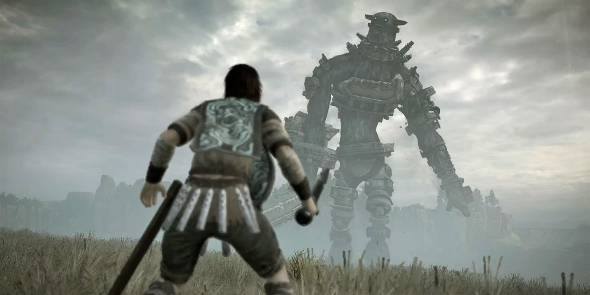
Shadow of the Colossus (2005) — mechanics that make you feel the weight of your actions.Guilt
Guilt is a self-conscious emotion — it involves reflection on oneself. Games are uniquely capable of eliciting it, because they take your own actions into account. Guilt is the feeling of deserving blame: when you do something you know is wrong, you’re conscious that you deserve blame for the outcome.
Of course, “something you know is wrong” is context-dependent — and games can use that. The Millennial Fair sequence of Chrono Trigger (1995) presents itself as a typical RPG and expects you to behave like you’re playing one. But it’s been recording your behavior differently than usual, and later uses your antisocial actions as evidence against your character in a trial.
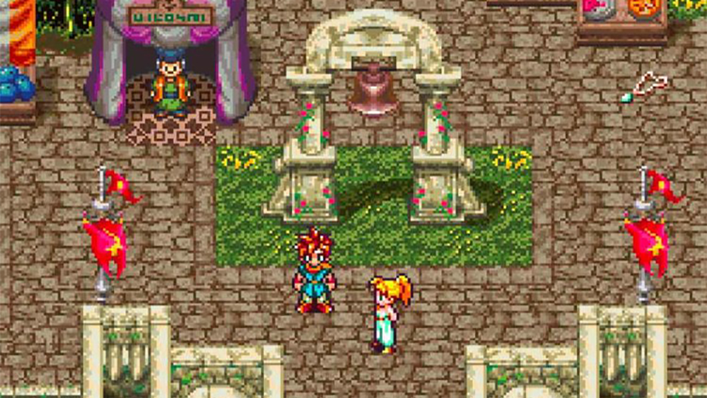
Chrono Trigger (1995) — the Millennial Fair turns your behavior into evidence.Teddy Diefenbach made this the subject of his 2012 MFA thesis, The Moonlighters, calling the technique narrative listening — where the game pays attention and responds to player actions at a level often dismissed as noise in the system.
Games don’t have to resort to trickery, though. Plenty present difficult choices and then play out the consequences.
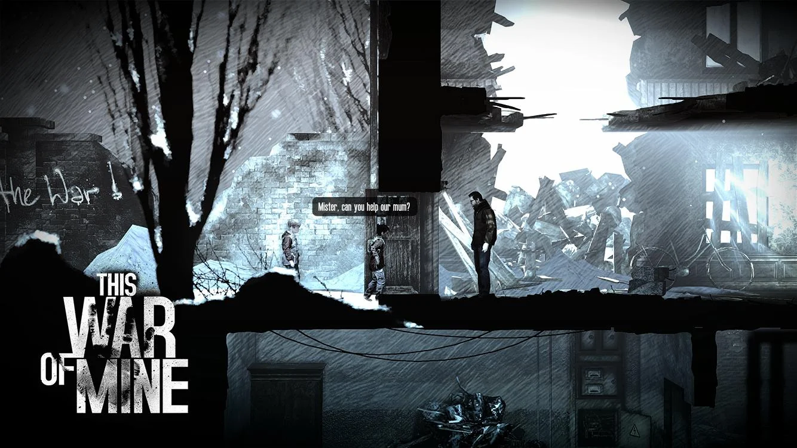
This War of Mine (2014).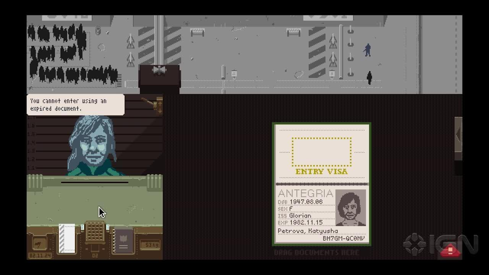
Papers, Please (2013) — pressuring players into choices they’ll feel guilt or pride about.The flip side of guilt is pride — feeling righteous for an action you believe was right despite danger, difficulty, or consequence. Games can be designed to pressure players toward choices they’ll feel guilty or proud of; either way, the game leans on the player’s ability to feel self-consciously.
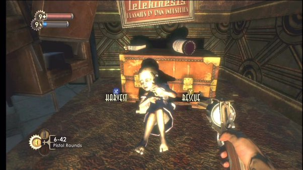
BioShock (2007) — moral dilemmas working the guilt/pride range.Fiero
Fiero is the sense of satisfaction derived from one’s achievements — the self-conscious emotion most commonly accessed by games. Most games are built around giving the player a sense of accomplishment on completing a level or finishing the game.
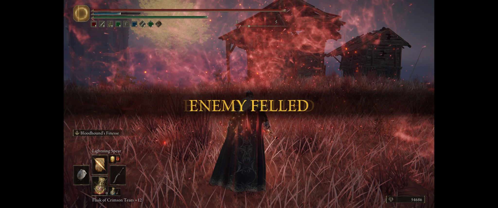
Elden Ring (2022) — soulslike difficulty engineered for fiero.Soulslike games do this very deliberately: completing a challenge typically requires mastery — learning a boss’s patterns, patience, the right gear and skills, “gitting gud” — so it often takes many attempts. Players are drawn to the satisfaction of overcoming.
But difficulty isn’t the only path. The 2008 meme game You Have to Burn the Rope deliberately rejects difficulty, making gameplay as easy as possible — and yet the player still feels satisfaction at the end. That feeling doesn’t come from overcoming a challenge; it comes from having correctly followed the instructions and received praise for doing so.
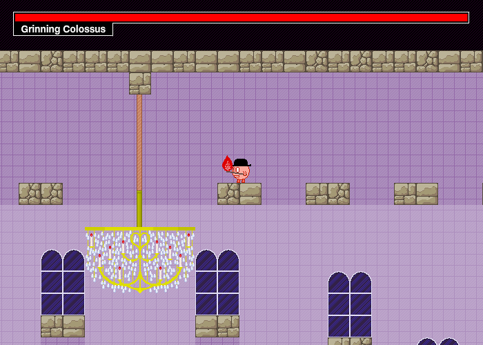
You Have to Burn the Rope (2008) — fiero without difficulty.Players can feel similar satisfaction for subverting instructions — wandering off a quest, killing an NPC, exploiting a glitch. The satisfaction is greater when the game acknowledges what happened.
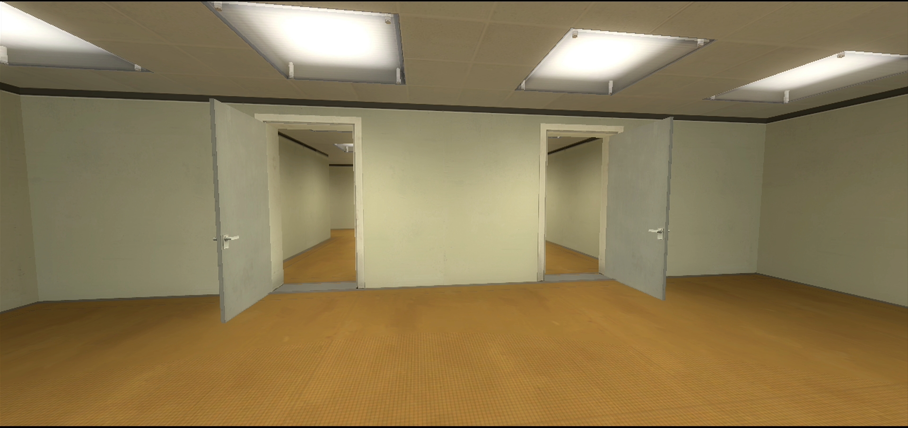
The Stanley Parable (2011) — satisfaction in defying the game’s instructions.Naches
Naches is a Yiddish word for the pride a parent or mentor takes in the accomplishments of their child or student. It’s a niche emotion, but certain genres align with it specifically, using virtual agents the player can mentor or influence.
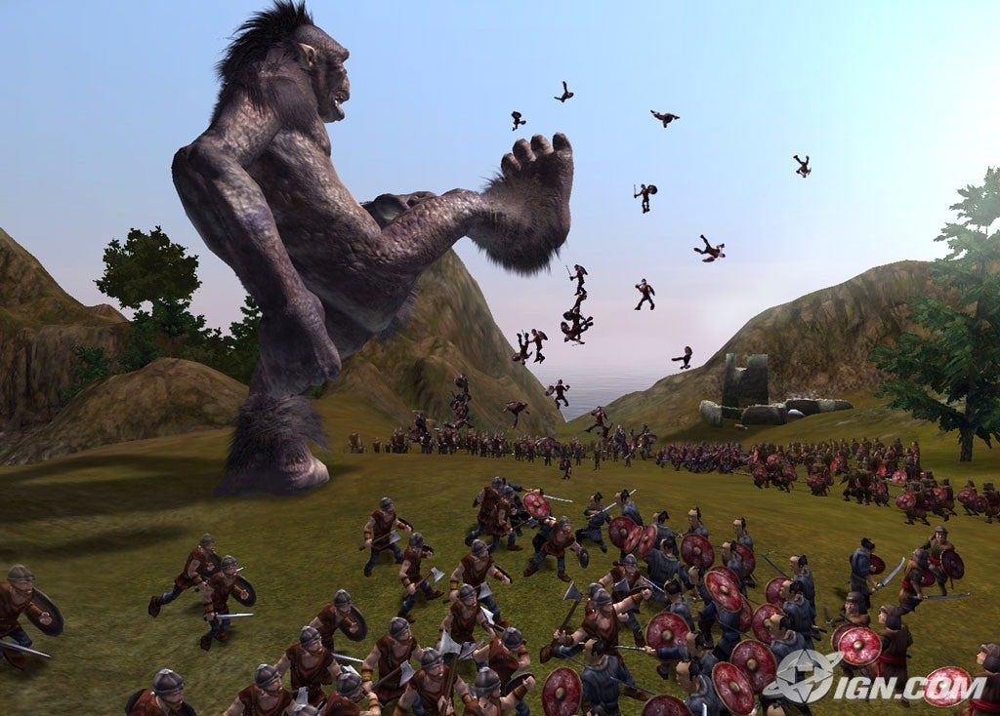
Black & White (2001) — training a creature you take naches in.It’s an old idea — the inspiration behind the 1996 Tamagotchi craze and 2005’s Nintendogs, and the creative pillar of “artificial life” games like 1996’s Creatures (agents that learn via neural networks and evolve via genetic algorithms). Black & White (2001) gave the player indirect control via a giant avatar creature they train as a pet.
Embarrassment
Embarrassment is the feeling that your shortcomings are being judged by others. It’s fundamentally social — based on how you relate to others and how your actions are perceived.
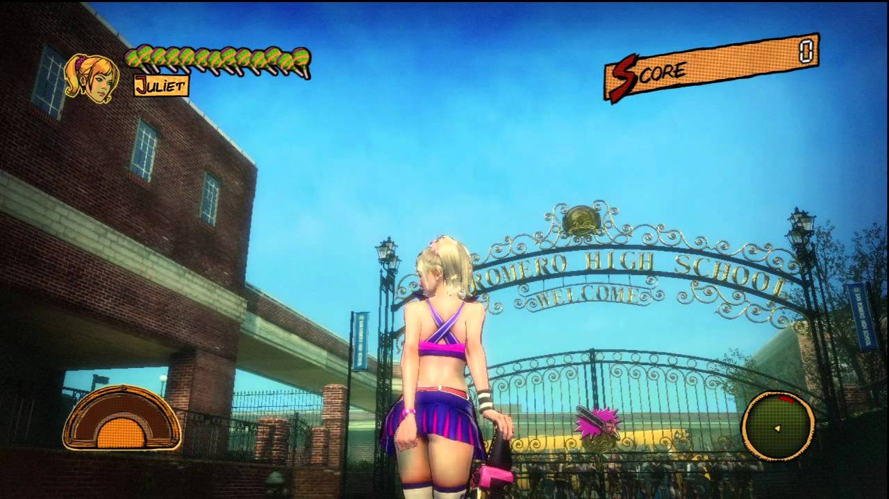
Lollipop Chainsaw (2012) — publicly shaming the player for an action.In Lollipop Chainsaw (2012), players who positioned the camera to look up the protagonist’s skirt earned a publicly-visible achievement, “I Swear! I Did It By Mistake!” The game — crude and tongue-in-cheek — makes a joke of exposing the player.
Social games, especially party games, can use embarrassment as motivation, punishment, and a method for bonding. Embarrassment stems from feeling vulnerable, and having your vulnerability accepted by your social circle can be affirming.
Coliberation
Coliberation is Bernie DeKoven’s word for the feeling of participating in something larger than oneself — evoked by religious practice, cooperating with a team, or a “well-played game.” Even two opponents facing each other competitively are also collaborators, working together to play a game well according to agreed-upon rules.
Professional athletes compete fiercely — violently, in American football — yet outside the game can feel respect, friendship, and admiration for opponents. The NFL practice of jersey trading is a great example: players bonded by mutual participation. Wins and losses come and go, but the sport is more important than any single contest.
Agency
Agency (self-efficacy) is the feeling that you have the capability to effect change — that what you do matters. In many ways it’s an overriding emotion: guilt, pride, fiero, and the rest all rest on the belief that your actions matter. If you don’t feel you have agency, you won’t feel complicit in any outcome.
The most important thing to recognize as a designer is that agency is subjective. You can design a game whose outcome changes radically based on player actions, but if the player doesn’t realize they’ve influenced it, they feel no agency. To make the player feel agency, the game must send clear signals about what choices they’re making and how those choices affect the game’s state.
Two related traps in how a system appears:
- The ELIZA Effect — when the player’s experience of a system suggests complexity that isn’t actually there. It’s a trick: a way to make the player feel more is going on than really is. Useful, but dangerous — if the player interacts enough to figure out how it really works, they’ll feel cheated.
- The Tale-Spin Effect — when the player’s experience obscures the complex mechanisms creating it. (Noah Wardrip-Fruin’s example: Tale-Spin’s rich internal simulation of characters’ goals and plans never surfaces in its output — the hidden action can’t be deduced from what’s shown.)
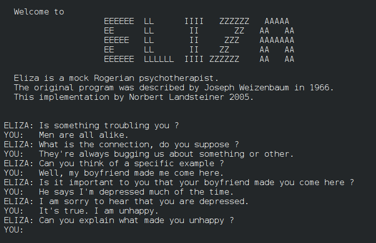
ELIZA (1967) — the original effect named after it.Multiple endings are one way games tell you your choices matter; recognizing that a game has them is one way a player feels agency. Players often read variable endings as good/bad, where bad endings are a failure state.
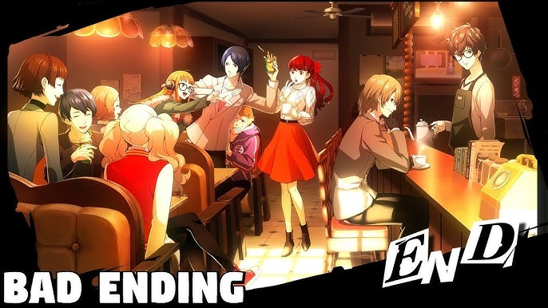
Persona 5 — endings that signal your choices mattered.In 2012, Mass Effect 3 earned scorn for boiling all of players’ investment down to a choice between three similar endings — leaving many feeling their actions hadn’t mattered after all. I like to contrast this with Beyond: Two Souls (2013), which offers a final choice in a way reminiscent of Mass Effect 3 — but the choice isn’t primarily about what happens. The events play out more or less the same way; what changes is how the player character feels about them.
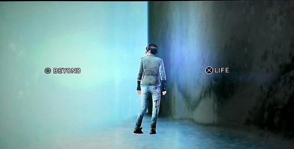
Beyond: Two Souls (2013) — a final choice about feeling, not outcome.Values at Play
Grow-a-game cards are a brainstorming tool to help designers think critically about the themes and messages their games communicate, and to imagine games that explore less common themes. The tool has four decks; we’ll focus on two:
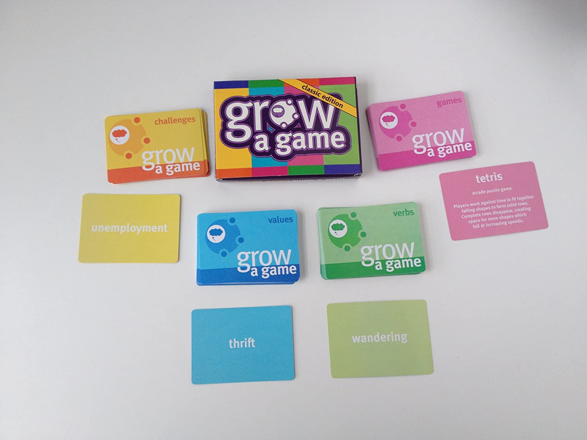
Grow-a-game cards — verbs and values for design brainstorming.- Verbs are game mechanics — what the player can do to act within the system: run, jump, shoot, buy, give…
- Values are dynamic elements — what behaviors the game rewards: violence, teamwork, speed, planning, patience…
The exercise. Pick a verb and a value. What might a game look like that used the verb as a core mechanic and expressed the value? Form a small group; I’ll give each group a couple of verbs and values. Explore the potential meanings of each, think about how they might interrelate, and come up with a potential game or activity based on that relationship.
Discussion — Blockout
Working from the Yang reading:
- What did you think of this chapter?
- How do “blockouts support experimentation”?
- Yang says using 3D art tools (Blender, Maya, SketchUp) for blockouts is controversial. Where do you fall?
- Section 4 is titled “Diverge and iterate.” Divergence is an important concept that will come up again — what does it mean?
Reading — The Game Design Macro
Playful Production Process by Richard Lemarchand, Chapter 17: The Game Design Macro. Read by next Thursday. This is the textbook that underpins CTIN 489; we’ll look at just one chapter, describing the Game Design Macro — a piece of design documentation you’ll begin using in just about all your classes. (In the Readings folder on our Drive.)
See You Next Time
Upload the final build of your Unreal Interaction Project to the Drive — we’ll playtest on Tuesday.
Related
- Self-Conscious Emotions
- Agency and Self-Efficacy
- ELIZA Effect
- Tale-Spin Effect
- Narrative Listening
- Values at Play
- The Macro
- Reading - Playful Production Process, Chapter 17 - The Game Design Macro (Lemarchand)
- Game - Shadow of the Colossus
- Game - Chrono Trigger
- Game - This War of Mine
- Game - Papers, Please
- Game - BioShock
- Game - Elden Ring
- Game - The Stanley Parable
- Game - Black & White
- Week 9.1 - Unreal Interaction Project
- Week 10.1 - Technology and Development